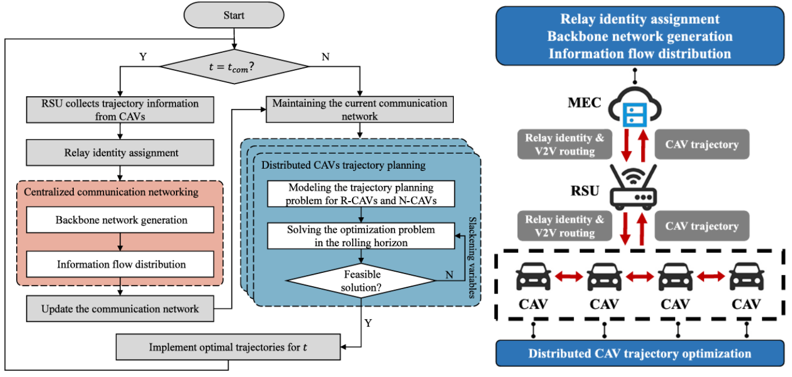
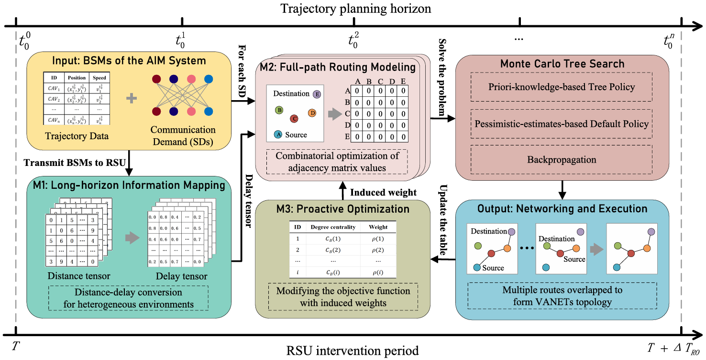
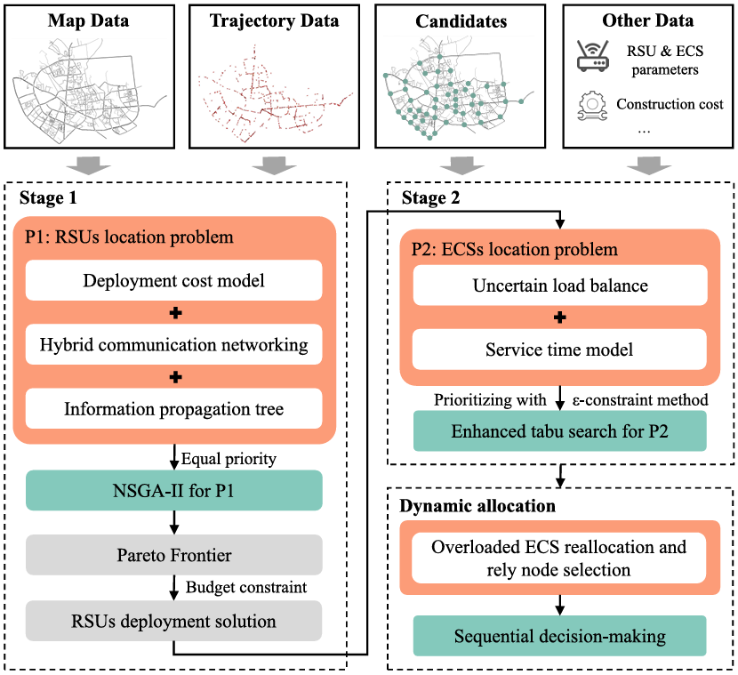
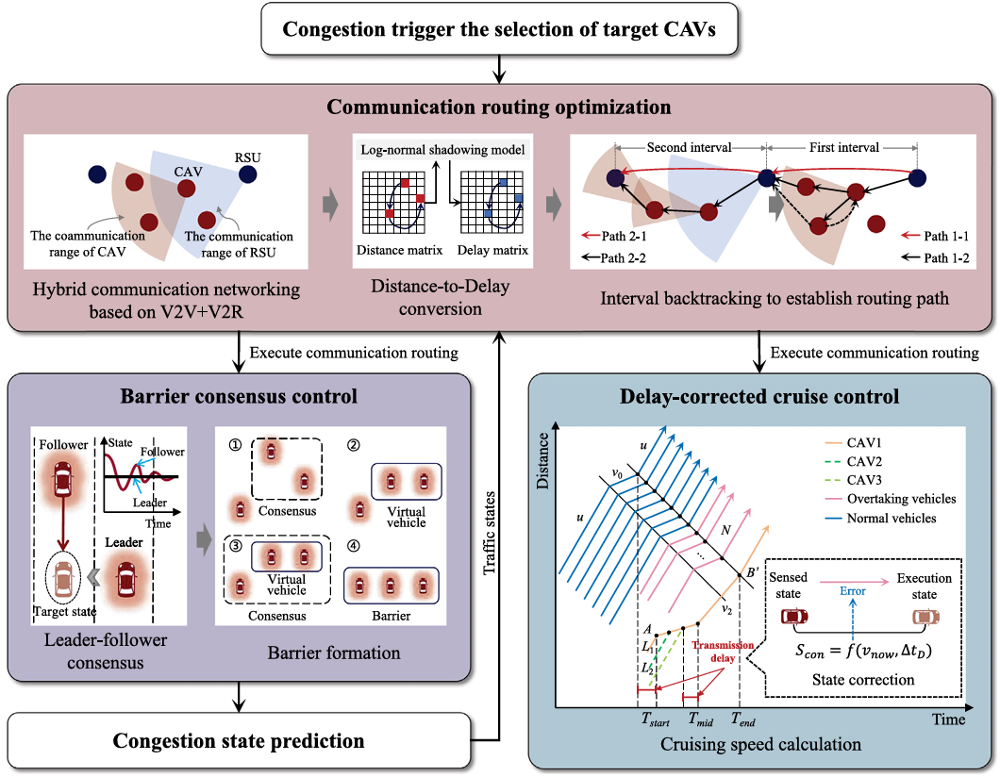
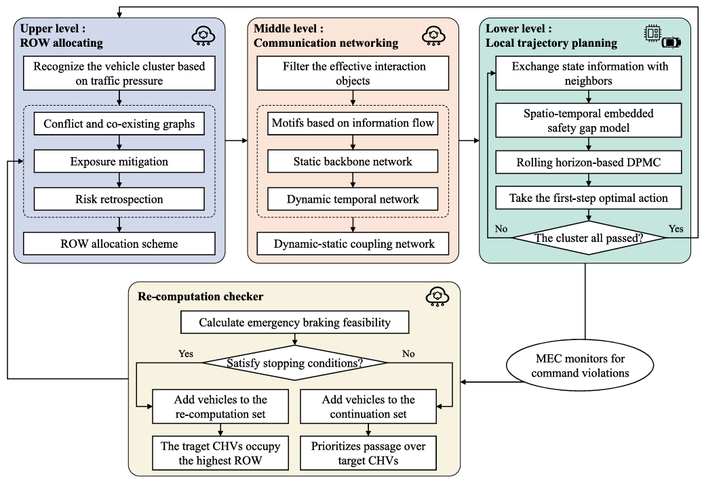

我于 2026 年 8 月入职长安大学经济与管理学院，现任助理教授。
我的研究兴趣主要包括自主式交通系统、 多智能体决策以及智能网联车辆协同管控。 迄今共发表论文 20 篇，其中第一作者或通讯作者论文 7 篇； 代表性成果发表于 Transportation Research Part C、 IEEE Transactions on Intelligent Transportation Systems、 Expert Systems with Applications 和 Accident Analysis & Prevention 等期刊。
🔥 最新动态
- 2026.08：入职长安大学经济与管理学院，任助理教授。
- 2026.06：于中山大学智能工程学院获得工学博士学位。
- 2026.02：一篇论文发表于 Expert Systems with Applications。
- 2025.12：一篇论文发表于 Accident Analysis & Prevention。
- 2025.09：一篇论文发表于 IEEE Transactions on Intelligent Transportation Systems。
- 2025.08：获交通运输学科国际博士生学术论坛三等奖。
- 2025.06：在世界交通运输大会（WTC）作现场学术报告。
- 2024.10：一篇论文发表于 Transportation Research Part C: Emerging Technologies。
- 2024.06：一篇论文发表于 IEEE Transactions on Intelligent Transportation Systems。
📝 论文成果
Highlights

T3C: A Traffic-Communication Coupling Control Approach for Autonomous Intersection Management System
Zhigang Wu, Jiyu Wang, Huanting Xu, Zhaocheng He*
Transportation Research Part C: Emerging Technologies, 169: 104886, 2024

Zhigang Wu, Zhaocheng He*, Qinghai Lin, Jiyu Wang, Guilong Li
IEEE Transactions on Intelligent Transportation Systems, 25(11): 16005–16023, 2024

Zhigang Wu, Huanting Xu, Di Wen, Xu Li, Zhaocheng He*
IEEE Transactions on Intelligent Transportation Systems, 26(12): 22855–22871, 2025

Zhigang Wu, Meng Li, Yanyong Guo, Zhibin Li, Shunchao Wang*
Accident Analysis & Prevention, 226: 108339, 2026

Zhigang Wu, Haipeng Zeng, Di Wen, Huanting Xu, Zhaocheng He*
Expert Systems with Applications, 314: 131656, 2026
Other Publications
- A Fine-Grained Lightweight Urban Signalized-Intersection Dataset of Dense Conflict Trajectories, Yiyang Chen, Zhigang Wu, Guohong Zheng, Xuesong Wu, Liwen Xu, Haoyuan Tang, Zhaocheng He, Haipeng Zeng, Scientific Data, 13: 766, 2026.
- Multi-Agent Deep Deterministic Policy Gradient-Based Coordinated Control for Urban Expressway Entrance-Arterial Interfaces, Shunchao Wang, Zhigang Wu*, Wangzi Yu, Systems, 14(3): 231, 2026.
- Cooperative Decision-making in Mixed Traffic via Conflict-aware Heterogeneous Graph Reinforcement Learning, Guohong Zheng, Yiyang Chen, Zhigang Wu, Zhaocheng He, Haipeng Zeng, Simulation Modelling Practice and Theory, 148: 103268, 2026.
- HDSVT: High-Density Semantic Vehicle Trajectory Dataset Based on a Cosmopolitan City Bridge, Di Wen, Yiting Zhu, Zhigang Wu, Zhe Wu, Qingfang Zheng, Shuhui Wang, Yaowei Wang, Zhaocheng He, Scientific Data, 13: 5, 2025.
- A Driving-Style-Adaptive Framework for Vehicle Trajectory Prediction, Di Wen, Yu Wang, Zhigang Wu, Zhaocheng He, Zhe Wu, Qingfang Zheng, Advances in Neural Information Processing Systems 38 (NeurIPS), 2025.
- Multi-Agent Game Theory-Based Coordinated Ramp Metering Method for Urban Expressways With Multi-Bottleneck, Qinghai Lin, Wei Huang, Zhigang Wu, Mengmeng Zhang, Zhaocheng He, IEEE Transactions on Intelligent Transportation Systems, 26(3): 3643–3658, 2025.
- A Cooperative Longitudinal-Lateral Platoon Control Framework with Dynamic Lane Management for Unmanned Ground Vehicles Based on a Dual-Stage Multi-Objective MPC Approach, Shunchao Wang, Zhigang Wu*, Yonghui Su, Drones, 9(10): 711, 2025.
- Signal-Vehicle Coordination Control Modeling and Roadside Unit Deployment Evaluation under V2I Communication Environment, Wanting Chen, Zhaocheng He, Yiting Zhu, Zhigang Wu, Journal of Advanced Transportation, 2023: 6751908, 2023.
- 基于AVI数据与深度强化学习的城市快速路匝道协调控制方法, Qinghai Lin, Zhaocheng He, Jun Xie, Zhigang Wu, Wei Huang, 中国公路学报, 36(10): 224–237, 2023.
🎖 学术奖励
- 2025：交通运输学科国际博士生学术论坛三等奖，威海。
💰 科研项目
- 国家重点研发计划项目“自主式交通系统计算技术”，课题三“异智交通流路车协同计算与级联控制”，2023.12–2026.11，重点参与。
- 国家自然科学基金—联合基金重点项目“面向新一代车路协同的交通信号智能控制理论与方法研究”，2022.01–2025.12，重点参与。
- 深圳市基础研究专项（自然科学基金）面上项目“异智网联环境下车路通算控协同基础理论与方法研究”，2024.11–2027.11，重点参与。
- 深圳市重点产业研发计划项目“基于端侧轻量化模型的全息路口边缘智能感知与协同决策关键技术研发”，2026.01–2028.12，参与。
- 华为—中山大学联合创新实验室项目“城市全息交叉口感知布局与控制策略”，2022.08–2023.06，参与。
📜 发明专利
- 一种面向自主式交叉口管理的通信组网方法及系统，武智刚，何兆成，蔺庆海，王纪禹。专利号：ZL202311807071.8；授权日：2025.06.20。
- 一种自主式交叉口通信组网与车辆轨迹联合优化方法及系统，武智刚，何兆成，王纪禹，许焕挺。专利号：ZL202411032150.0；授权日：2025.02.28。
- 自动驾驶车辆轨迹规划方法、装置、电子设备及存储介质，孙启鹏，武智刚，曹宁博，杜婷竺，马飞。专利号：ZL202111355844.4；授权日：2021.11.16。
📖 教育经历
- 2022.09–2026.06，博士，计算机科学与技术（智能交通工程），中山大学；导师：何兆成教授。
- 2026.01–2026.05，访问学习，系统工程，香港城市大学；合作导师：Andy H. F. Chow 教授。
- 2019.09–2022.06，硕士，交通运输工程，长安大学；导师：孙启鹏教授。
- 2014.09–2018.06，学士，电气工程及其自动化，长安大学。
📚 学术服务
Journal Reviewer
- IEEE Transactions on Intelligent Transportation Systems
- IEEE Transactions on Vehicular Technology
- International Journal of Mechanical Sciences
- Expert Systems with Applications
- Aerospace Science and Technology
- Scientific Data
- ISA Transactions
- Robotics and Autonomous Systems
Conference Reviewer
- IEEE Intelligent Transportation Systems Conference (ITSC)
- IEEE Intelligent Vehicles Symposium (IV)
- Conference on Neural Information Processing Systems (NeurIPS)